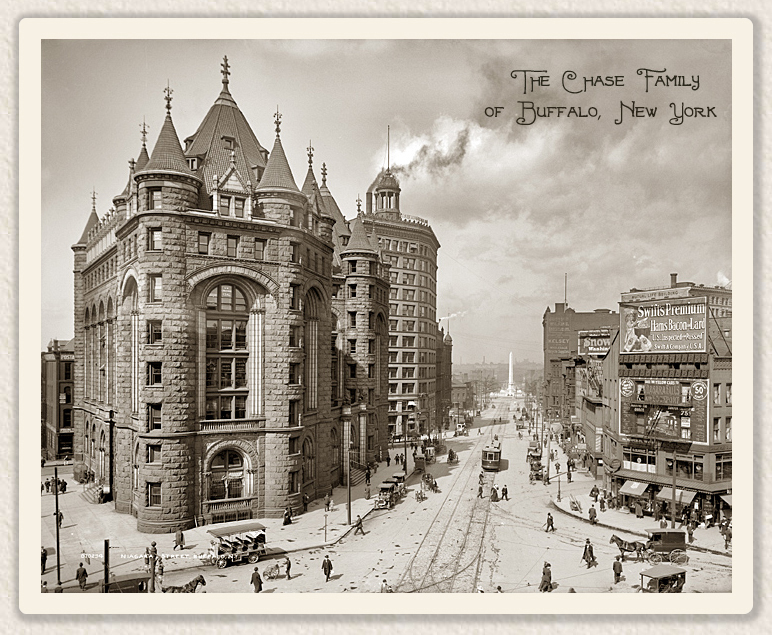
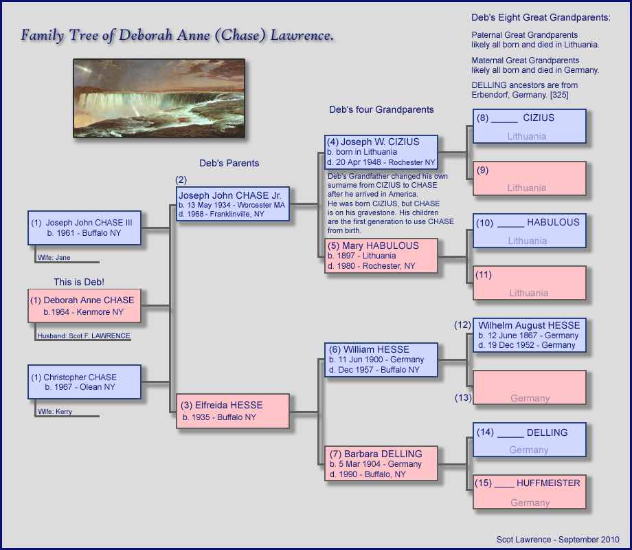
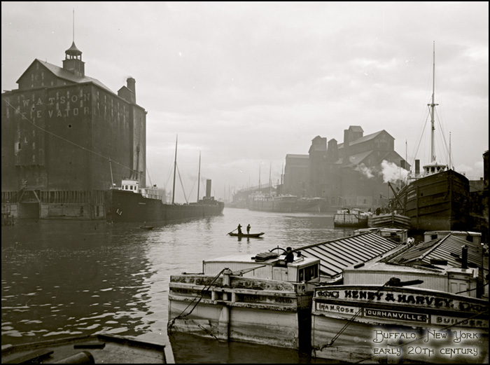
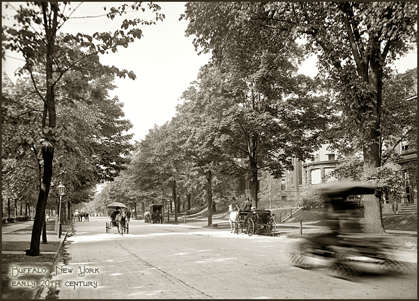

|
|
 Page 6, the CIZIUS/CHASE and HESSE familys of Buffalo, NY. This page is about
my Wife's family and
genealogy.
Begining with three siblings, Joseph John Chase III, Deborah Anne Chase, and Christopher Chase, listing all their known ancestors and relations. This record is being written by Scot Lawrence, husband of Deborah (Chase) Lawrence, and was started in the year 2008. The majority of the data comes the records, photos, and personal knowledge and memories of Deb's mother, Elfreida (Hesse) (Chase) Walker. [325] What we know so far: All Four of Deb's grandparents came to America from Europe in the 1920's, and all four settled in the Buffalo, NY area. Joseph and Mary CIZIUS, Deb's paternal grandparents, came over from Lithuania, and her Maternal grandparents, William HESSE and Barbara DELLING, came over from Germany. It is believed that both sets of Grandparents were *not* yet married, and did not know each other when they came over to America from Europe as young adults, they each met their future spouses after arriving in America.[325] The Chase-Hainer pedigree chart, listing all known ancestors so far: |

|
|
The CIZIUS -
CHASE Family.
Deb's Paternal grandparents. (We have two spellings, CIZUS and CIZIUS, see the sources section, below, for origins of each) Deb's paternal Grandfather, (4) Joseph W. CIZIUS, was born in Lithuania. birth date uncertain, but probably 1890's. He died in Rochester NY on April 20, 1948, as Joseph W. CHASE, and is buried at Holy Sepulchre cemetery, Rochester, NY [529] His wife is Mary CIZIUS (CHASE), her maiden name is currently unknown. She was born in 1897[530], probably in Lithuania, and died in 1980, Rochester, NY and is buried at Holy Sepulchre cemetery, Rochester, NY [530] Joseph and Mary emigrated to America separately as young adults in the 1920's,[325] and did not know each other before arriving in America. They settled in or around Worcester Massachusetts, where they presumably met and were married. Their son, Joseph Jr. (Deb's father), was born in Worcester in 1934. The family then later moved to Buffalo NY. Deb's paternal grandfather, (4) Joseph W. Chase Sr, (Joseph Chase the 1st) is the source and origin of the CHASE surname for Deb's family. He was born Joseph W. CIZIUS in Lithuania, probably in the 1890's. Yes, there are many other "Chase" families in the world, it's a rather common name..but Deb's family is unique in that we can know with complete certainty they are *not* related to any other Chases! ;) apart from their own known immediate family. For tracing back the direct-male line, other Chase genealogies are useless, because we are only up to three generations using the Chase name! Before the 1920's there were no Chase's in Deb's family tree, they were the CIZIUS family of Lithuania. And tracing the CIZIUS family beyond Joseph Sr. has been quite difficult, for several reasons: First, attempting to trace records in Europe, with a foreign language, is difficult for any genealogy researcher, you have to work with records in a foreign country, which is difficult enough in and of itself, but then you also add in a foreign language on top of it! And, Im not even 100% certain that "Cizius" is the correct spelling! its close, but it could be Cizus, Cisus, Cisius, etc..the only good source document we have is Joseph Jr's birth certificate, which seems to say "Cizius" but its hard to make out the spelling exactly. |
|
|
Cemetery visits:
|
|
|
Sources: Scot is going to place ALL Chase source data here. Meanwhile Source information can be found here: https://scotlawrence.github.io/genealogy/sources.html
|
|
|
Deb's
direct ancestor surnames,
these Surnames are ancestors of the Chase family. DELLING CHASE CIZUS (or perhaps CIZIUS) HESSE HUFFMEISTER Surnames that are relatives (cousins and other relations) of Deb's, but are not direct ancestors, these are the surnames of cousins, Aunts and Uncles of the Chase family HAINER Unsolved questions: 3. Marriage date and location for (6) and (7) William and Barbara HESSE. 4. Birth date of (4) Joseph W. Cizius Sr. Probably born in the 1890's in Lithuania, died April 20, 1948. buried at Holy Sepulcher cemetery, Rochester, NY [529] The industrial powerhouse
that was Buffalo, NY, in the Early to Mid 20th
Century.
This is what drew Deb's Grandparents to America in the 1920's..Prosperity:
  Return to the main Lawrence & Chase Genealogy Page.
Email to: scotlawrence@gmail.com Scot LawrenceRochester NY, USA Page started 2008. This CHASE page was last updated March 21, 2026 |